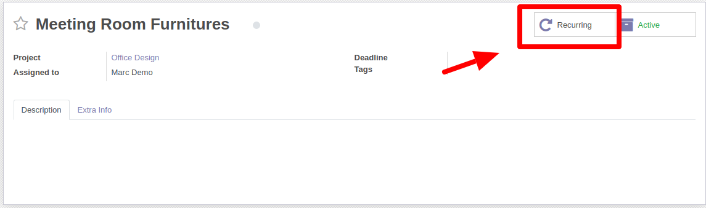
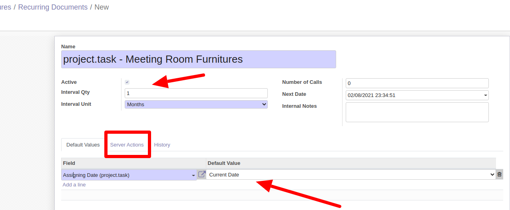
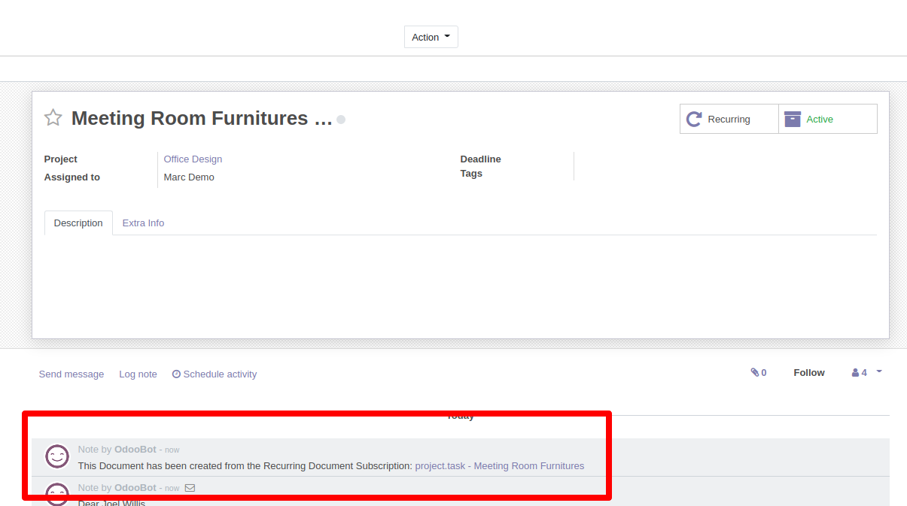

Recurring Project Tasks
This module recreates Project Tasks in a time interval.
This is now an Odoo standard feature. Please have a look in the settings of Project.
As an addition to Odoo's standard: Pack activities to the recurring tasks.
exemplary use cases:
- every month the developer should make a backup
- Refrigerator temperature should be measured every 20 minutes
- the fire extinguishers must be serviced every 2 years
- Every month an Amazon report should be pulled
The first Task is created manually
and the subsequent tasks are created automatically
| Manually created |
|
Automatic |
|
Automatic |
|
Automatic |
|
|
|
|
|
|
|
Manually created Task #1
The Task can also be created from a sale order The automatically generated
delivery bill counts towards the delivered quantities of the sale
order(if the product is configured correctly)

Create Recurring from #1
Set the next Date, the intervall an a name You
can choose current Date or None Value for Fields

Automatically create Task #2 - #xx
The next document will be created per time job Every
Month there will be a new Task
